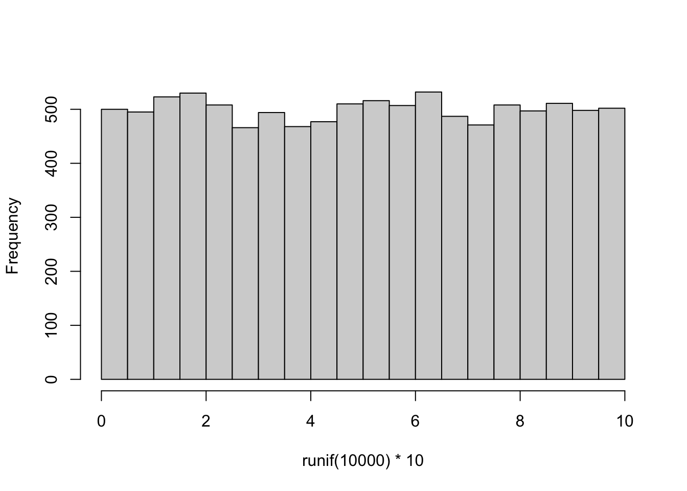
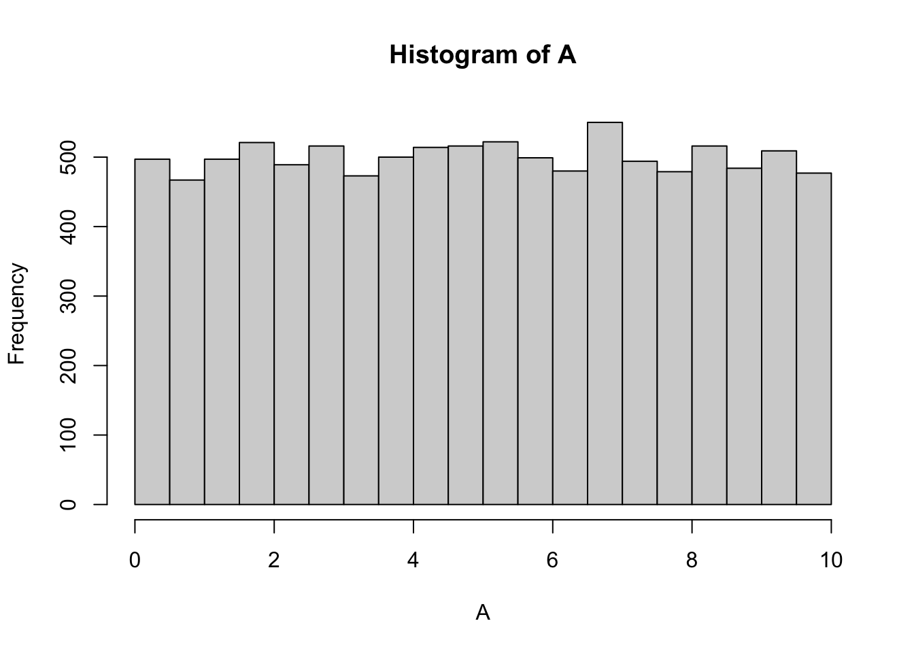
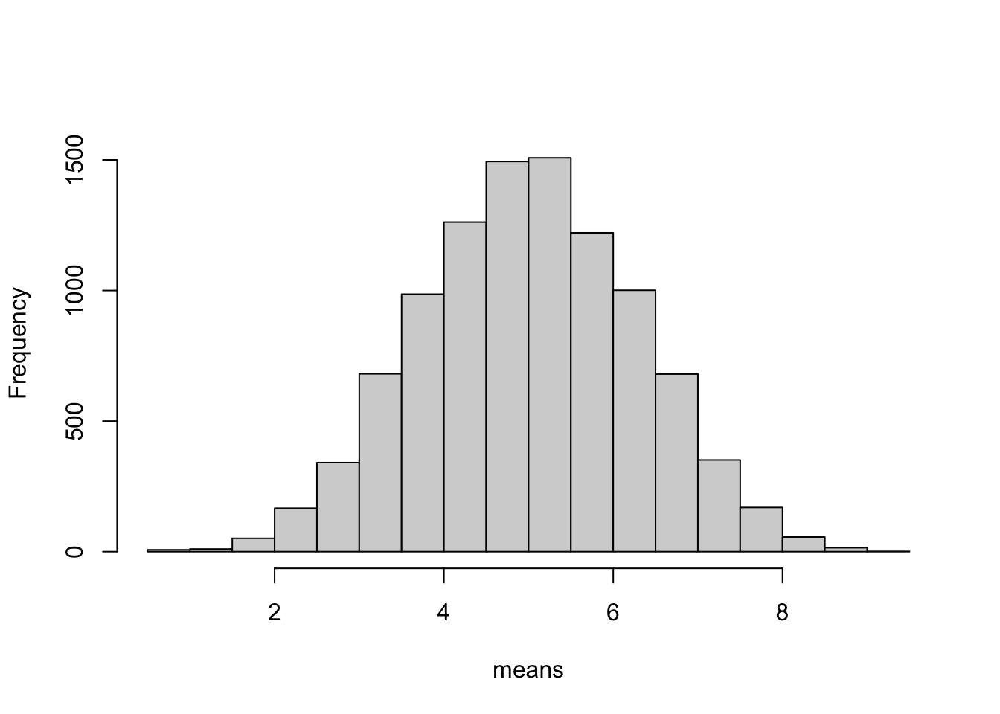
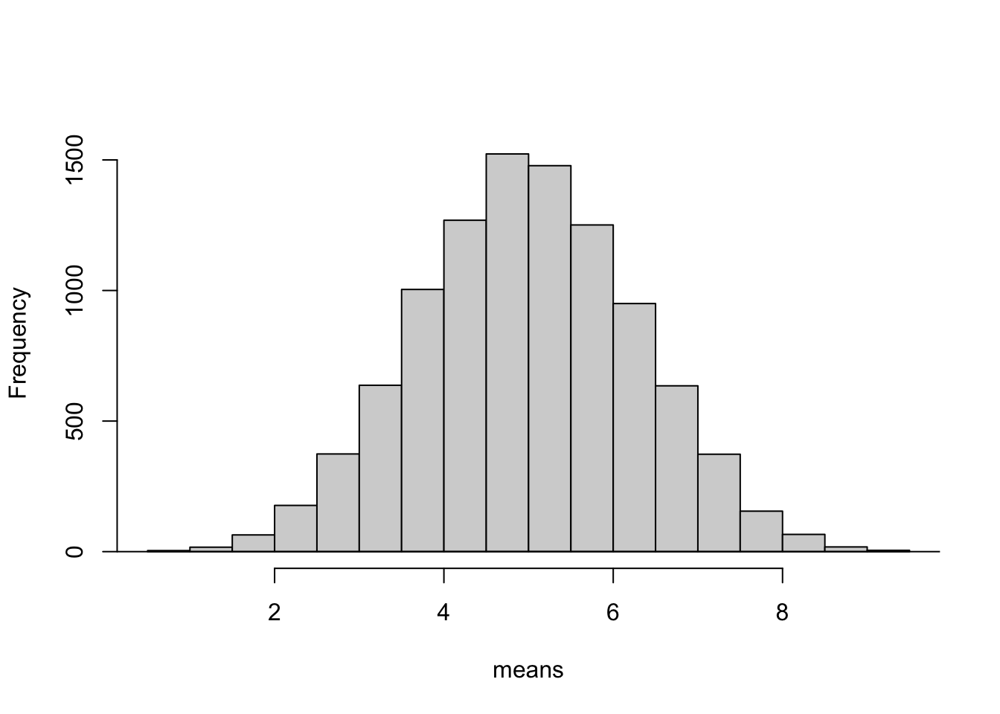
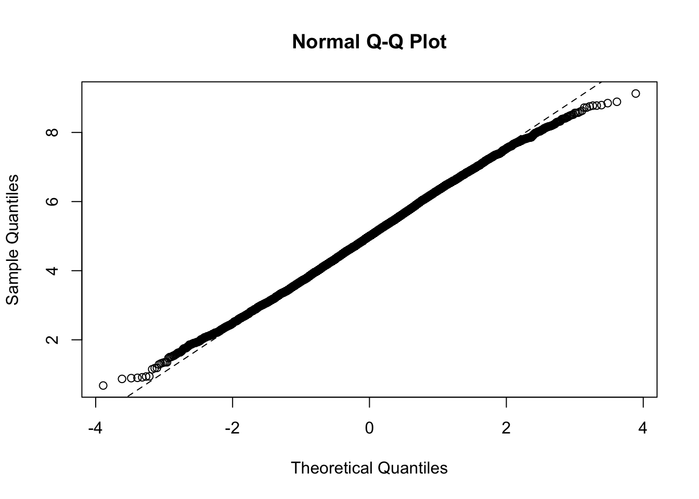
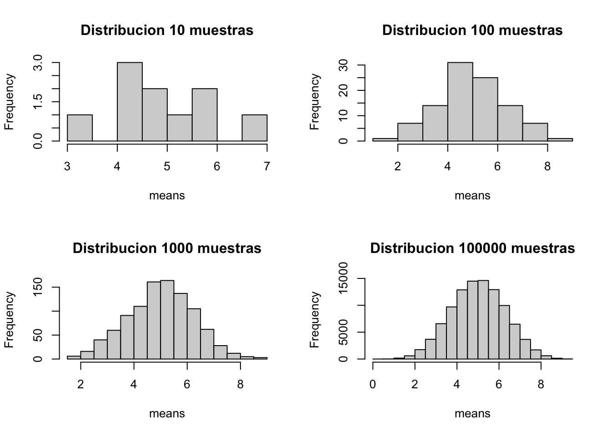
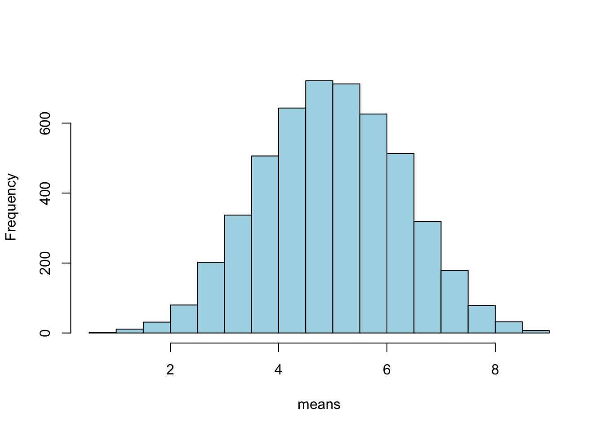
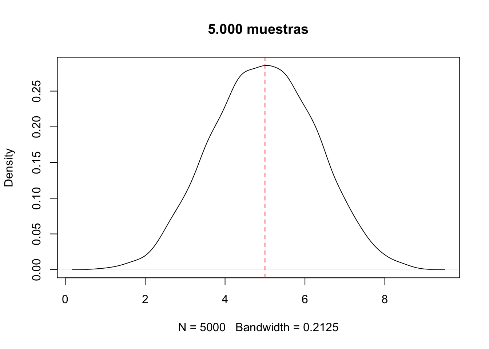
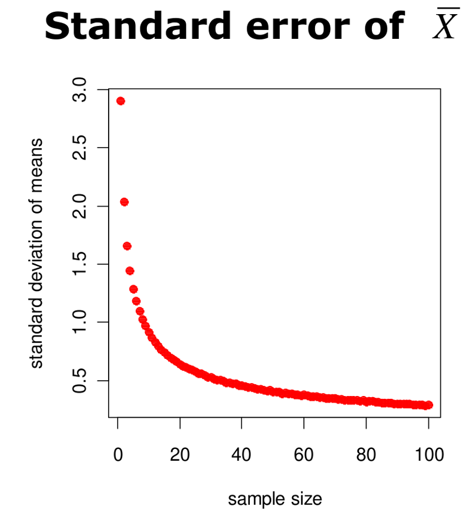
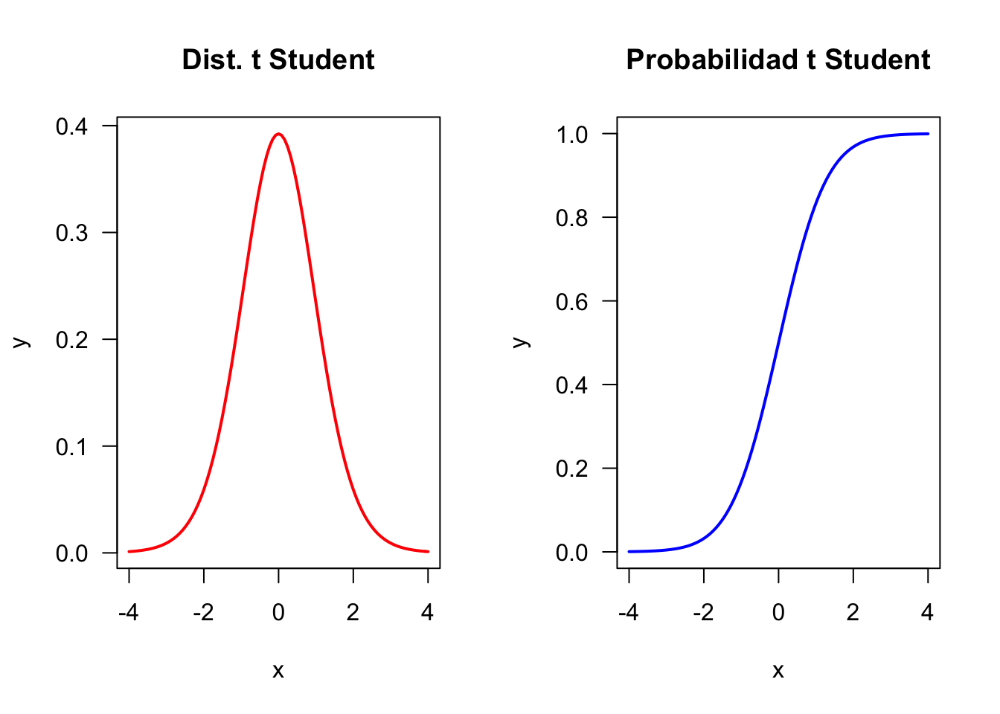

El teorema central del límite (TCL) es una teoría estadística que establece que, dada una muestra aleatoria suficientemente grande de la población, la distribución de las medias muestrales seguirá una distribución normal.
Si se toman muestras repetidas de una población con varianza finita y se calculan sus promedios, entonces los promedios se distribuirán normalmente.
Esto es verdad incluso cuando las muestras son tomadas de una distribución NO normal, siempre y cuando se tomen el suficiente número de muestras.
4.2 Demostración en R
Calculemos la media de cinco números aleatorios distribuidos uniformemente entre 0 y 10. La media será baja cuando obtengamos, ej., 2,3,1,2,1 y alta cuando obtengamos 9,8,9,6,8. Lo normal es que la media se acerque a 5. Hagamos esto 10.000 veces y observamos la distribución de las 10.000 medias. Los datos se distribuyen de forma rectangular (uniforme) en el intervalo de 0 a 10, por lo que la distribución de los datos brutos debería ser plana:
# distribución de 10.000 números # aleatorios entre 0-10hist(runif(10000)*10, main="")

set.seed(1234) # fijar semilla para que el proceso aleatorio sea siempre igualA <-runif(10000)*10# distribucion aleatoria uniformehist(A)

# media de la poblacionmediaA <-mean(A)
¿Qué ocurre con la distribución de las medias muestrales, basada en la toma de sólo cinco números aleatorios uniformemente distribuidos?
# creamos un vector numérico vacío de tamaño 10.000means <-numeric(10000)# llenamos el vector vacío con medias de 5 números aleatoriosfor (i in1:10000){means[i] <-mean(runif(5)*10)}hist(means,ylim=c(0,1600),main="")

Se ve bien, pero ¿cuan cerca está de una distribución normal?
Dibujar un distribución normal teórica usando X y S de la muestra.
Test de normalidad.
m <-mean(means)desv <-sd(means)xv <-seq(0,10, 0.1)yv <-dnorm(xv, mean = m, sd = desv)hist(means,ylim=c(0,1600),main="")lines(xv, yv)

4.2.1 Test de Normalidad
qqnorm(means)qqline(means, lty=2)

shapiro.test(sample(x = means, 5000))
Shapiro-Wilk normality test
data: sample(x = means, 5000)
W = 0.99905, p-value = 0.006669
Función para generar muestras de medias y visualiza el histograma
generar_muestras_de_medias <-function(numero, muestras =5){ means <-numeric(numero)for (i in1:numero){ means[i] <-mean(runif(muestras)*10) }hist(means, main =paste('Distribucion', i, 'muestras'))}
Diferencias entre medias muestrales con diferentes repeticiones
# como se ven las diferencias entre medias muestrales con diferentes repeticiones?par(mfrow =c(2, 2))for(i inc(10, 100, 1000, 100000)){generar_muestras_de_medias(i)}

Distribuciones en n
4.2.2 Incrementar el número muestral
Cuando seleccionamos muestras de una distribución normal, la distribución de las medias muestrales de la muestra también tiene una forma “normal”.
Aumentar el tamaño muestral disminuye la dispersión.
means <-numeric(5000)for (i in1:5000){ means[i] <-mean(runif(5)*10) }hist(means, col ='lightblue', main ='')

Distribución normal de 5000 muestras
plot(density(means), main ='5.000 muestras')abline(v =5, lty =2, col ="red")

valor de la media de todas estas medias muestreales
mean(means)
[1] 4.977626
sd(means)
[1] 1.296756
# media de la poblacion?mediaA
[1] 5.003123
Este comportamiento parece bastante razonable. Se esperaría una estimación más precisa de la media de la población original si tomamos la media de muestras de mayor tamaño.
4.2.3 Distribución muestral de X
Media de la distribución muestral es = a las media de la población original
\mu_{\bar{x}}=E(\bar{x})=\mu
Desviación estándar de la distribución muestral igual:
\sigma_{\bar{x}}=\frac{\sigma}{\sqrt{n}} Este es el error estándar de la media.

Error estándar de la media
4.2.4 Ajustar una curva normal
# generar datos entre 0-1xv <-seq(0,10,0.1)dnorm(xv, mean =mean(means), sd =sd(means))
En probabilidad y estadística, la distribución t (de Student) es una distribución de probabilidad que surge del problema de estimar la media de una población normalmente distribuida cuando el tamaño de la muestra es pequeño y la desviación estándar poblacional es desconocida.
Si el tamaño muestral (n) es muy largo (e.g., > 30), la distribución de t Student se aproxima a una distribución Normal.
par(mfrow =c(1, 2))curve(dt(x, df =15), -4, 4, col ='red', ylab ='y', lwd =2, las =1, main ='Dist. t Student')curve(pt(x, df =15), -4, 4, col ='blue', ylab ='y', lwd =2, las =1, main ='Probabilidad t Student')

las distribuciones de probabilidad de la t student se generan a partir de dt y pt
La distribución Normal necesita de valores de \mu y \sigma. Acabamos de demostrar que no es posible estimar σ a partir de S:
X es un estimador sin sesgo de \mu
S es un estimador sesgado de \sigma
t Student es una distribución que se describe con dos parámetros:
X
DF (deegrees of freedom), o grados de libertad
Tiene distinta forma según los grados de libertad (Degrees of freedom [DF])
DF = ν = n - 1
Variación de la distribucion de t Student con distintos DF